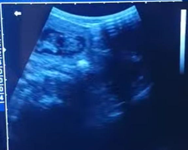

At Julie’s Pet Scanning and Microchipping, we offer exceptional pet ultrasound scanning services across Neath, Port Talbot, Swansea, and Aberdare. Our advanced ultrasound technology provides a non-invasive, safe, and highly accurate way to monitor your pet’s health and confirm pregnancies. Whether you’re an expectant pet owner eager to see how many adorable puppies or kittens are on the way, or you need to track the progress of your pet’s health, our experienced and compassionate team is here to help.
Pet Scanning Services


We understand that visits to the vet can be stressful, so we offer mobile services to bring our advanced scanning equipment right to your home. This ensures a comfortable and familiar environment for your pet, reducing their stress and making the process as smooth as possible. Our detailed ultrasound scans help in confirming pregnancies and assessing the overall health of your pet, providing you with vital information and peace of mind.
Our mobile service means that you don’t have to worry about transporting your pet to a clinic. We bring the technology to you, ensuring that your pet receives the best care in a familiar and stress-free setting. Trust Julie’s Pet Scanning and Microchipping for reliable, compassionate care for your furry friends.